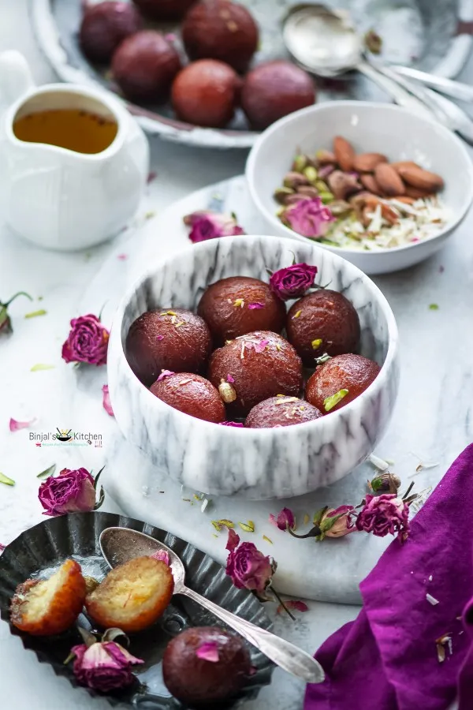

Gulab Jamun
Ingredients
For Dough:
- 150 gram Chena
- 500 gram Dhaap Khoya
- 1/2 tsp Green Cardamom Powder
- 80 gram Refined Flour
- Sugar syrup
- 10 tbsp Sugar
- 10 gram Green Pistachio
- 40 gram Almonds, sliced
- Refined Oil
- 150 gram Chena
- 500 gram Dhaap Khoya
- 1/2 tsp Green Cardamom Powder
- 80 gram Refined Flour
- Sugar syrup
- 10 tbsp Sugar
- 10 gram Green Pistachio
- 40 gram Almonds, sliced
- Refined Oil
Recipe
To Make Gulab Jamun
- To make the gulab jamun balls, mix chena, dhaap khoya, refined flour and green cardamom powder in a smooth dough.
- Keep it aside. Next to prepare the syrup for the Gulab Jamun.
- For the syrup, add sugar and water in pot and put it on slow fire till it turns in a semi thick sugar syrup.
- For the main step, even sized balls of the khoya mixture needs to be made.
- While doing so, add chopped pistachio in the khoya balls.
- Deep fry them in hot refined oil on a slow fire till they are nice dark brown in colour.
- Immediately transfer the fried gulab jamuns into the hot sugar syrup. Keep them soaked in sugar syrup for at least 2 hours.
- Serve hot garnished with sliced almonds.
- To make the gulab jamun balls, mix chena, dhaap khoya, refined flour and green cardamom powder in a smooth dough.
- Keep it aside. Next to prepare the syrup for the Gulab Jamun.
- For the syrup, add sugar and water in pot and put it on slow fire till it turns in a semi thick sugar syrup.
- For the main step, even sized balls of the khoya mixture needs to be made.
- While doing so, add chopped pistachio in the khoya balls.
- Deep fry them in hot refined oil on a slow fire till they are nice dark brown in colour.
- Immediately transfer the fried gulab jamuns into the hot sugar syrup. Keep them soaked in sugar syrup for at least 2 hours.
- Serve hot garnished with sliced almonds.

Kaju Pista Roll
Ingredients
- 1/2 kg Cashew nuts
- 400 gm Sugar
- 1/2 kg Pista
- 250 gm Sugar
- Silver Warak
- Saffron
Recipe
To Make Kaju Pista Roll
- Soak 1/2 kg cashew nuts in water. Remove water and make a paste. Add 250 gram sugar in it. Put this paste in a pan on slow flame for 45mins. Make a dough.
- lanch 1/2 kg pista. Add 250 gram sugar in it and make a paste. Keep it on low flame for half an hour. Make a dough.
- Make a thin sheet of the cashew nut dough. Put pista filling in it. Roll it once and cut it so that it looks like a pista roll.
- Garnish your pista rolls with silver warak and saffron.